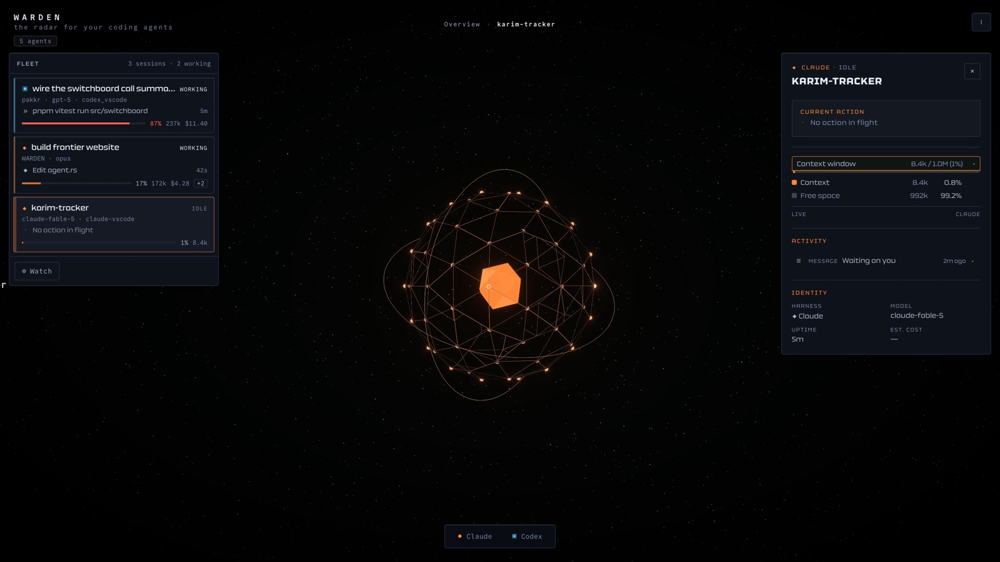

WARDEN, every agent you are running on one live board
Every agent you are running, on one live board.
What each one is doing this second, which have gone quiet, and how much context and money they have burned through. One screen instead of fourteen terminal tabs.
One payment · runs entirely on your Mac · nothing leaves the machine
Every session on one screen
Claude Code, Codex, and anything else you are running, side by side and live.
A dead agent looks dead
Working sessions blaze. One that quietly stopped goes dim and stays dim.
Context and cost, in the open
Watch a window fill and a bill climb while you can still do something about it.
This is the whole product.
No dashboard to assemble, no config file, no integration step. It opens to the board, and the board is already correct.

1 2 3- 1
The fleet. Every session with the command it is running right now, its model, and how far into its context window it has climbed.
- 2
The board. One globe per agent. Subagents hang off the agent that spawned them, so a runaway fan-out is visible as a shape, not a log.
- 3
The readout. What the selected agent is doing, what it last touched, how long it has been up, and what it has cost so far.
Read it from across the room.
Three channels, each carrying exactly one fact. Once you have them, the board answers from across the room and you stop opening sessions to check.
- Size · context occupancy
- A globe grows with the context its session is holding. A nearly full agent is a large body before you open anything.
- Brightness · liveness
- Working agents blaze toward white hot. Idle ones dim and hold their hue. Colour never encodes load.
- Hue · harness
- ◆ Claude Code, ▣ Codex, ◇ anything else. Always paired with a glyph, never colour alone.
Three things it will not do
WARDEN sits on top of work you care about, so the interesting half of the spec is the half about restraint. These are enforced in the code, not in the marketing.
It does not write to your projects
WARDEN tails the transcript files your harnesses already produce and never touches a watched project's source. The only writes outside its own database are harness session metadata, and they are confined to a single file so the write surface stays one file wide.
It does not open a socket until you ask
At rest it contacts no relay and binds no endpoint. Remote observation binds lazily, the moment you press Share. What crosses the wire is a redacted projection, never the board state itself, and a test fails the build if a radar type is ever serialized toward the network.
It does not invent a number
Every globe, ring and flare maps to a real signal: session liveness, context token weight, subagent hierarchy. An unrecognised harness gets a neutral slate globe rather than borrowing another's identity, and nothing on screen is there to fill space.
- Platform
- macOS, Apple Silicon
- Reads today
- Claude Code, Codex
- Storage
- SQLite with FTS5, local
- Sharing
- QUIC, on demand only
Buy it once.
A licence per Mac, paid one time. No subscription, no seats, no account to create. Add machines and the per-machine price drops.
Two Macs
SAVE $5
Desktop and laptop on one licence, for the way most people actually work.
Get WARDENThree Macs
SAVE $15
The whole desk, including the machine that only ever runs agents.
Get WARDENmacOS on Apple Silicon · no account · no API keys
Run five agents. Watch one screen.
It launches to the board, sits in the tray, and answers the only question worth asking mid session: which of these is actually still moving?